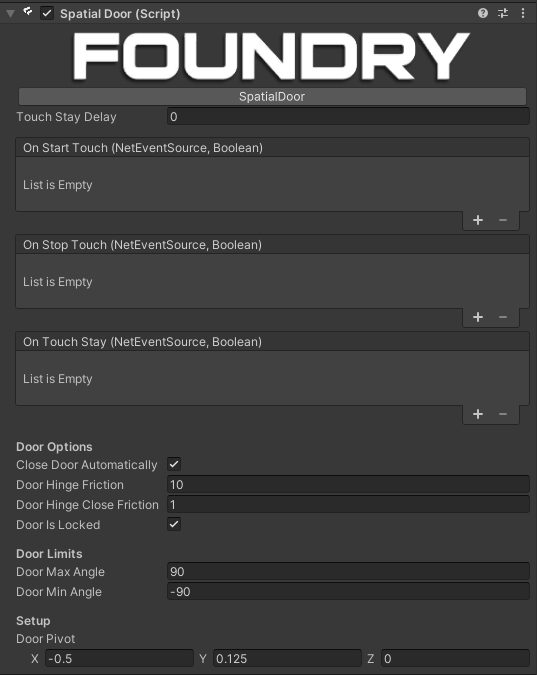

SpatialDoor

Description
A networked door implementation, using the foundry touch point system.
Usage
Add this script to a game object with a collider and update Door Pivot to line up with the hinge of the door (the door script swings on the y axis, so the door pivot is simply an offset for that.)
Door hinge friction and close friction are perhaps slightly unintuitive, but the way the door works currently is by moving in increments depending on if it's currently touched or not.
When the door is touched, it will move by Door Hinge Friction degrees per frame, and when it is not touched, it will move by Door Close Friction degrees per frame.
Don't worry, this is due for a refactor to make door motion smoother and more intuitive.
Door Is Locked can be set to change if the door can be interacted with or not, useful for conditional doors.
Networking
To network the object as well add a NetworkObject and NetworkTransform.